gives interference visibility,
gives interference visibility,  for Fock light — values below 1 are non-classical.
for Fock light — values below 1 are non-classical.
Definitions
Split
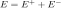
(positive frequency ∝ ) (Glauber 1963). A photodetector absorbs photons, so its rate is
) (Glauber 1963). A photodetector absorbs photons, so its rate is 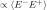
, coincidences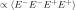
. Single mode: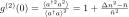
.Values
| light | g2(0) | statistics |
|---|---|---|
| thermal (chaotic) | 2 | super-Poissonian |
| coherent (laser) | 1 | Poissonian |
| Fock n | 1 − 1/n | sub-Poissonian |
| single photon | 0 | antibunched |
Classical fields satisfy
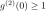
and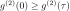
(Cauchy–Schwarz): antibunching is proof of quantum light (Hanbury Brown and Twiss 1956; Kimble et al. 1977).Derivation for thermal light
For a Gaussian (chaotic) field, factorising fourth moments gives the Siegert relation
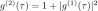
. With a Lorentzian line of width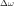
,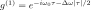
and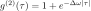
: photons arrive bunched within the coherence time.Picture
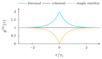
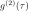
of thermal light (bunched, 2 at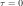
), coherent light (1) and a single emitter (antibunched, 0 at ).Worked example
Hanbury Brown–Twiss with a sodium lamp, linewidth 1 GHz: bunching lasts
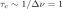
ns, so detectors need sub-ns timing. A quantum dot measured with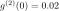
has a multiphoton probability 1% of that of a laser with equal .
.
Engineering applications
Single-photon source certification, stellar interferometry (HBT measured star diameters), fluorescence correlation spectroscopy, laser threshold diagnosis (
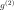
goes from 2 to 1 crossing threshold), LIDAR photon counting.Pitfall
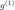
cannot distinguish a laser from filtered thermal light of the same spectrum; only and higher orders reveal the statistics.